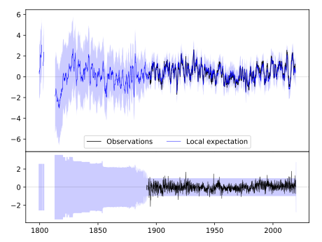
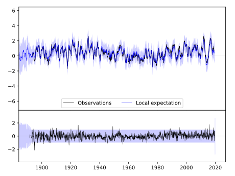
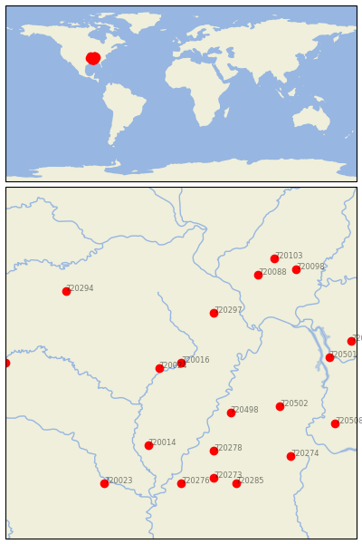

CORNING [USA]


| Neighbour | Name | Country | Distance | Lon/Lat | Years |
|---|
| 720016 | CORNING | USA | 0 | -90.6, 36.4 | 1891-2019 |
| 720024 | POCAHONTAS 1 | USA | 37 | -91.0, 36.3 | 1889-2019 |
| 720297 | MARBLE HILL | USA | 113 | -90.0, 37.3 | 1891-2019 |
| 720498 | COVINGTON 3 SW | USA | 128 | -89.7, 35.5 | 1883-2019 |
| 720014 | BRINKLEY | USA | 175 | -91.2, 34.9 | 1883-2019 |
| 720502 | JACKSON EXP STN | USA | 184 | -88.8, 35.6 | 1891-2019 |
| 720278 | HERNANDO | USA | 186 | -90.0, 34.8 | 1882-2019 |
| 720088 | DU QUOIN 4 SE | USA | 216 | -89.2, 38.0 | 1886-2019 |
| 720294 | LEBANON 2W | USA | 235 | -92.7, 37.7 | 1890-2019 |
| 720273 | BATESVILLE 2 SW | USA | 239 | -90.0, 34.3 | 1882-2019 |
| 720501 | DOVER 1 W | USA | 241 | -87.9, 36.5 | 1893-2019 |
| 720276 | CLARKSDALE | USA | 244 | -90.6, 34.2 | 1885-2019 |
| 720103 | MT VERNON 3 NE | USA | 259 | -88.9, 38.3 | 1879-2019 |
| 720285 | WATER VALLEY | USA | 260 | -89.6, 34.2 | 1889-2019 |
| 720274 | BOONEVILLE | USA | 261 | -88.6, 34.7 | 1889-2019 |
| 720098 | MCLEANSBORO | USA | 265 | -88.5, 38.1 | 1882-2019 |
| 720023 | PINE BLUFF | USA | 275 | -92.0, 34.2 | 1883-2019 |
| 720187 | HOPKINSVILLE | USA | 280 | -87.5, 36.8 | 1893-2019 |
| 720508 | WAYNESBORO | USA | 280 | -87.8, 35.3 | 1884-2019 |
| 720017 | EUREKA SPRINGS 3 WNW | USA | 286 | -93.8, 36.4 | 1888-2019 |